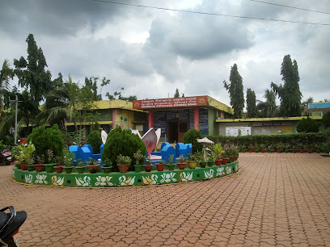
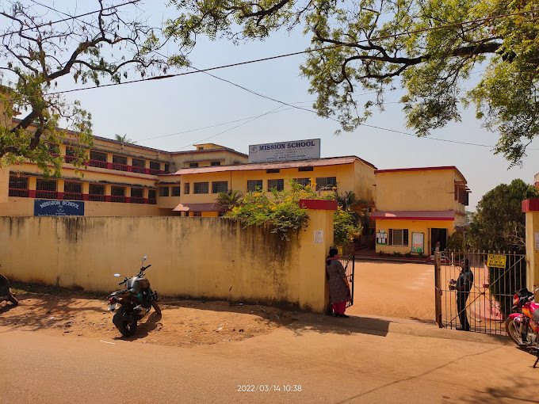

Top Schools
Kendriya Vidyalaya
Kendriya Vidyalaya ,Khurda Road was initially started in SERWO School building 30 years before in 1975 with 05 class rooms of one section form class-I to V having 200 students who belonged to the railway employees of S.E Railway Khurda Road Division. Then the school shifted to the present campus after construction of it’s own building since then the school is growing in libs and bounds not only in quantity as a result of which it has become a 03 section school
Railway School
School is up to Secondary School (IX-X) and affiliated to Central Board of Secondary Education (CBSE). The School is a Coed Day School, with classes from I to X. It is an English Medium school

Aditya Birla Public School
It is recognized as one of the best schools not only in Odisha but also in India. We, at Aditya Birla Group believe in giving generously to the society with the firm conviction that the greatest gift we can give to the society is value based, socially responsible, environmentally conscious, innovative Quality Education.

Cohen International School
Cohen International School (CIS) is the best CBSE School in Bhubaneswar, Odisha. The school believes in providing a comprehensive, inspiring environment for personalized and collaborative education.

Mission School
MISSION SCHOOL was established in 1960 and it is managed by the Pvt. Unaided. It is located in Urban area. It is located in JATNI MPL block of KHORDHA district of Orissa. The school consists of Grades from 1 to 10.
